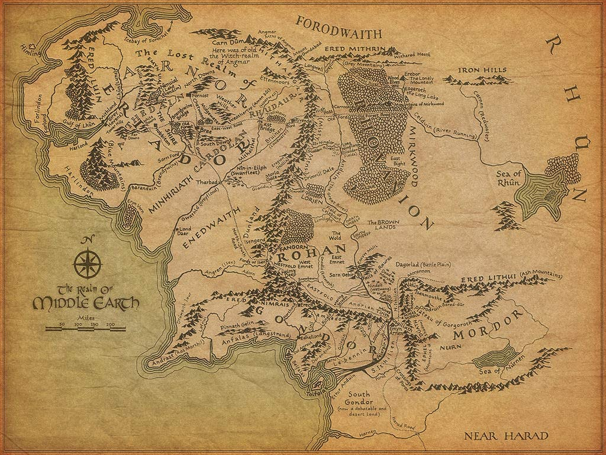

Regions of Middle-Earth:
There are several regions in Middle-Earth, some of them we know very little about. We are going to talk about Realms, which are the places where a race lives. In each one of them we will talk about their people and traditions and of course about the most significant places.
But first, here you have a map of Middle-Earth. Explore it as much as you like!
